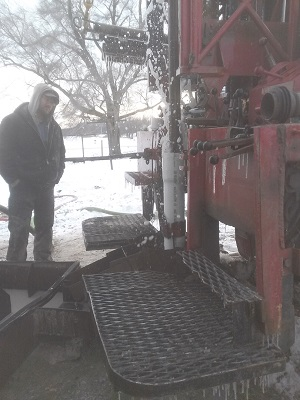
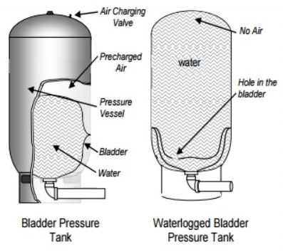
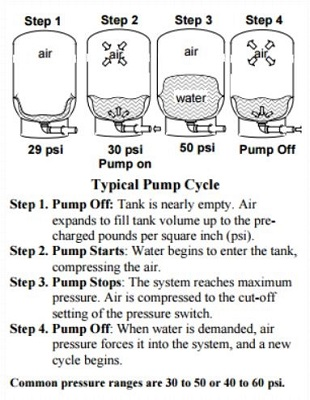

What to ask when considering a new replacement well:
What are the first steps to start the process?
Do you provide a written estimate that includes all components of the well?
What are my options?
Do you provide a guarantee or warranty for the well?
How long will the process take?
What do I do if I get a letter from the health department after the inspection?

Working in the snow
Common questions:
Call or email us if you have additional questions.
Are 2 inch wells illegal?
Yes and no. An existing 2 inch well that is in a pit, is not illegal. However, when a home is sold or when a new 2 inch well is installed, it cannot be in a well pit. In both of these instances the well pump and tank must be above grade in accordance with current well construction code.
My 2 inch well is not producing water like it used to. Can I use muriatic acid to clean the screen?
No. Introducing acid to the well will not make it to the screen due to the bremmer check valve on top of the screen. It is also not a good idea to "shoot" any projectile down the well.
How often should my pump cycle?
It depends on the size of the tank. On average, once the pump shuts off you should be able to flush a toilet two to three times before it turns back on. It should take longer for larger tanks.
Why does my pump kick on every time I use water?
It is possible that the tank is water logged. This does not necessarily mean the tank is bad. It could just be that it has lost a majority of the air needed to do its job efficiently.
I noticed water standing in a puddle around my well. What should I do?
If this occurs, turn power off to the well and give us a call. Most likely the fitting at the well has rotted off and needs to be replaced.
My pump runs for no reason. What could be causing this to happen?
When there are no leaking faucets or a running toilet, then the problem is most likely in the well. It could be caused by a faulty check valve in the pump for submersible pumps or in the supply line on a jet pump. It could also be a rotted fitting somewhere in the system.
How long should a well last?
Most wells have an average life expectancy between 45 to 50 years with routine maintenance.
Yearly Well Maintenance For Home Owners
Preventive maintenance can help your well system last longer and cost less.
Typically, an economy submersible pump will last 5-10 years, midgrade submersible pump lasts 10-15 years and a quality submersible pump can last 20+ years.
Usually, the lifespan of a pressure tank will be shortened due to incorrect air pressure. 99% of residential pressure tanks should have air pressure of 28-30 PSI.
Typically an economy pressure tank can last 5-7 years.
We normally install a better quality pressure tank that lasts 15-20 years on average.

Pressure Tank Diagram
What does a pressure tank do?

Pump Cycle Diagram
Protects against water hammer. Water hammer is a thump or hammer like noise that occurs when a pump comes on or off.
Minimizes pump cycling. This prevents frequent starts and stops, protecting pumps from damage.
Maintains a desired range of water pressure in the water system.
Instructions on how to properly maintenance your pressure tank
Turn off Power to the well.
Turn on all COLD water faucets in house.
Wait until all water is done coming out of faucets.
Leave faucets on until all steps are completed.
Use a tire gauge on the air charging valve to check current air pressure.
The air pressure should amount to 28-30 PSI (2 PSI below the cut in pressure). If not add or remove the proper amount of air.